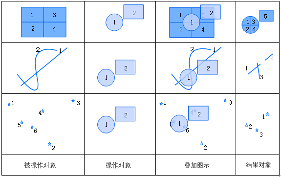
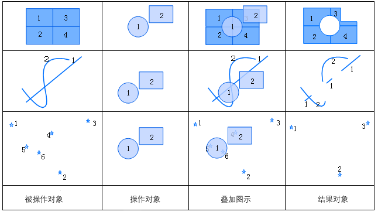
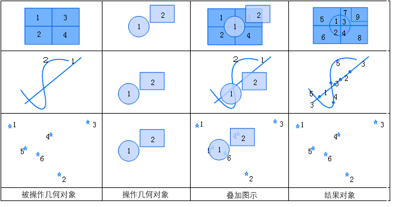
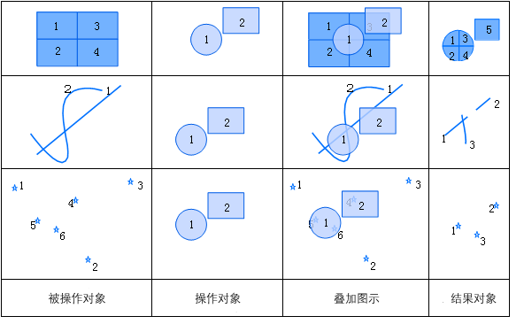
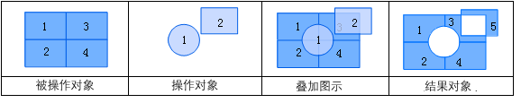

java.lang.Enum<OverlayOperationType>
com.supermap.android.spatialAnalyst.OverlayOperationType
java.lang.Enum<OverlayOperationType>
com.supermap.android.spatialAnalyst.OverlayOperationType
|
|||||||||
| 上一个类 下一个类 | 无框架 | ||||||||
| 摘要： 嵌套 | 枚举常量 | 字段 | 方法 | 详细信息： 枚举常量 | 字段 | 方法 | ||||||||
java.lang.Object
public enum OverlayOperationType
叠加操作枚举类型。
该类提供了叠加分析的运作方式。
| 枚举常量摘要 | |
|---|---|
CLIP操作数据集（几何对象）裁剪被操作数据集（几何对象）。 |
|
ERASE在被操作数据集（几何对象）上擦除掉与操作数据集（几何对象）相重合的部分。 |
|
IDENTITY对被操作数据集（几何对象）进行同一操作，即操作执行后，被操作数据集（几何对象）包含来自操作数据集（几何对象）的几何形状。 |
|
INTERSECT对两个数据集（几何对象）求交，返回两个数据集（几何对象）的交集。 |
|
UNION对两个面数据集（几何对象）进行合并操作。 |
|
UPDATE对两个面数据集（几何对象）进行更新操作。 |
|
XOR对两个面数据集（几何对象）进行对称差操作。 |
|
| 方法摘要 | |
|---|---|
static OverlayOperationType |
valueOf(java.lang.String name)返回带有指定名称的该类型的枚举常量。 |
static OverlayOperationType[] |
values()按照声明该枚举类型的常量的顺序，返回 包含这些常量的数组。 |
| 从类 java.lang.Enum 继承的方法 |
|---|
clone, compareTo, equals, finalize, getDeclaringClass, hashCode, name, ordinal, toString, valueOf |
| 从类 java.lang.Object 继承的方法 |
|---|
getClass, notify, notifyAll, wait, wait, wait |
| 枚举常量详细信息 |
|---|
public static final OverlayOperationType CLIP
操作数据集（几何对象）裁剪被操作数据集（几何对象）。
1. 输出结果数据集（几何对象）为：被操作数据集（几何对象））落在操作数据集（几何对象））内的对象；
2. 操作数据集、被操作数据集以及结果数据集的地理坐标系必须一致；
3. 所有叠加分析的结果都不考虑数据集的系统字段；
4. Clip 与 Intersect 在空间处理上是一致的，不同在于对结果数据集属性的处理，Clip 分析只是用来做裁剪，结果数据集和被操作数据集的属性表结构相同，此时叠加分析参数设置字段无效；而 Intersect 求交分析的结果则可以根据字段设置情况来保留两个数据集的字段。
5. 该操作适合的数据集类型：操作数据集：面； 被操作数据集：点、线、面。
6. 该操作适合的几何对象类型：几何对象：面； 被操作几何对象：线、面。

public static final OverlayOperationType ERASE
在被操作数据集（几何对象）上擦除掉与操作数据集（几何对象）相重合的部分。
1. 如果对象全部被擦除了，则返回 Null；
2. 操作数据集（几何对象）定义了擦除区域，凡是落在操作数据集（几何对象）区域内的被操作数据集（几何对象）部分都将被去除，而落在区域外的特征要素都将被输出为结果数据集（几何对象），与 Clip 运算相反；
3. 操作数据集、被操作数据集以及结果数据集的地理坐标系必须一致；
4. 该操作适合的数据集（几何对象）类型： 操作数据集（几何对象）：面； 被操作数据集（几何对象）：点、线、面。

public static final OverlayOperationType IDENTITY
对被操作数据集（几何对象）进行同一操作，即操作执行后，被操作数据集（几何对象）包含来自操作数据集（几何对象）的几何形状。
1. 同一运算就是操作数据集（几何对象）与被操作数据集（几何对象）先求交，然后求交结果再与被操作数据集（几何对象）求并的运算。
2. 如果被操作数据集（几何对象）为点类型，则结果数据集（几何对象）保留被操作数据集（几何对象）的所有对象；
3. 如果被操作数据集（几何对象）为线类型，则结果数据集（几何对象）保留被操作数据集（几何对象）的所有对象，但和操作数据集（几何对象）相交的部分将被打断；
4. 如果被操作数据集（几何对象）为面类型，则结果数据集（几何对象）保留以被操作数据集（几何对象）为控制边界之内的所有多边形，并且把与操作数据集（几何对象）相交的地方分割成多个对象（注：被分割成的对象为返回结果的parts中的对象）。
5. 操作数据集、被操作数据集以及结果数据集的地理坐标系必须一致；
6. 该操作适合的数据集（几何对象）类型：操作数据集（几何对象）：面；被操作数据集（几何对象）：点、线、面。

public static final OverlayOperationType INTERSECT
对两个数据集（几何对象）求交，返回两个数据集（几何对象）的交集。
1. 求交运算与裁剪运算得到的结果数据集的空间几何信息相同的，但是裁剪运算不对属性表做任何处理，而求交运算可以让用户选择需要保留的属性字段；
2. 被操作数据集（几何对象）的特征对象（点、线和面）在与操作数据集（几何对象）中的多边形相交处被分裂（点对象除外），分裂结果被输出到结果数据集（几何对象）中。
3. 操作数据集、被操作数据集以及结果数据集的地理坐标系必须一致；
4. 该操作适合的数据集类型：操作数据集：面； 被操作数据集：点、线、面。
5. 该操作适合的几何对象类型：几何对象：面； 被操作几何对象：面。

public static final OverlayOperationType UNION
对两个面数据集（几何对象）进行合并操作。
1. 结果数据集（几何对象）保存被操作数据集（几何对象）和操作数据集（几何对象）中的全部对象，且对相交部分进行求交和分割运算。
2. 操作数据集、被操作数据集以及结果数据集的地理坐标系必须一致；
3. 该操作适合的数据集（几何对象）类型： 操作数据集（几何对象）：面； 被操作数据集（几何对象）：面。
public static final OverlayOperationType UPDATE
对两个面数据集（几何对象）进行更新操作。更新运算是用操作数据集（几何对象）替换与被操作数据集（几何对象）的重合部分，是一个先擦除后粘贴的过程。
1. 结果数据集（几何对象）中保留了操作数据集的几何形状和属性信息。
2. 操作数据集、被操作数据集以及结果数据集的地理坐标系必须一致；
3. 该操作适合的数据集（几何对象）类型： 操作数据集（几何对象）：面； 被操作数据集（几何对象）：面。

public static final OverlayOperationType XOR
对两个面数据集（几何对象）进行对称差操作。即对于每一个被操作数据集（几何对象），去掉其与操作数据集（几何对象）相交的部分，而保留剩下的部分。
1. 对称差运算的结果数据集（几何对象）的属性表包含两个输入数据集（几何对象）的非系统属性字段；
2. 操作数据集、被操作数据集以及结果数据集的地理坐标系必须一致；
3. 该操作适合的数据集（几何对象）类型：操作数据集（几何对象）：面；被操作数据集（几何对象）：面。

| 方法详细信息 |
|---|
public static OverlayOperationType[] values()
for (OverlayOperationType c : OverlayOperationType.values())
System.out.println(c);
public static OverlayOperationType valueOf(java.lang.String name)
name - 要返回的枚举常量的名称。如果该枚举类型没有带有指定名称的常量， - 则抛出 IllegalArgumentException
|
|||||||||
| 上一个类 下一个类 | 无框架 | ||||||||
| 摘要： 嵌套 | 枚举常量 | 字段 | 方法 | 详细信息： 枚举常量 | 字段 | 方法 | ||||||||